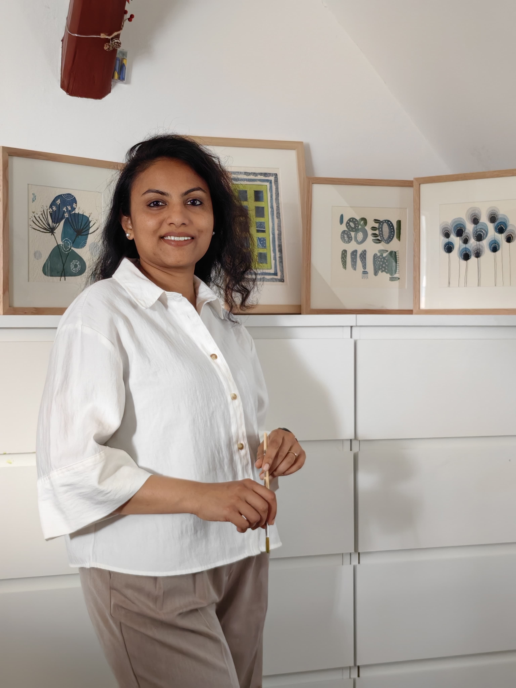
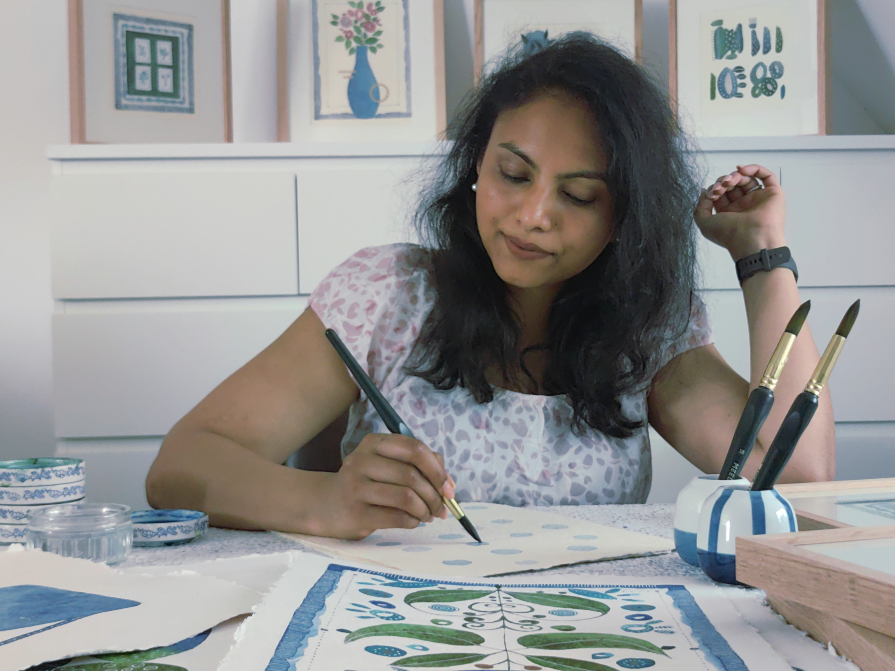
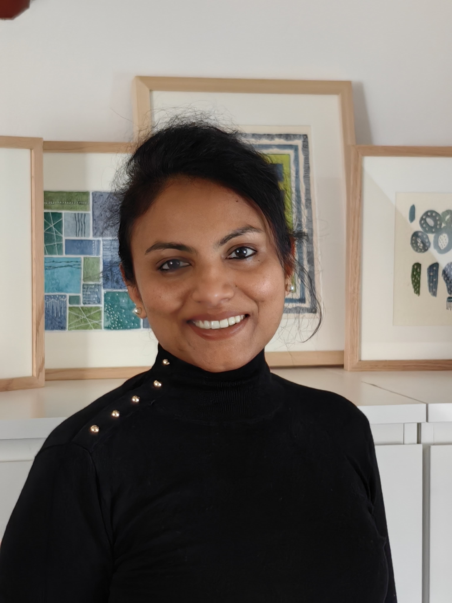
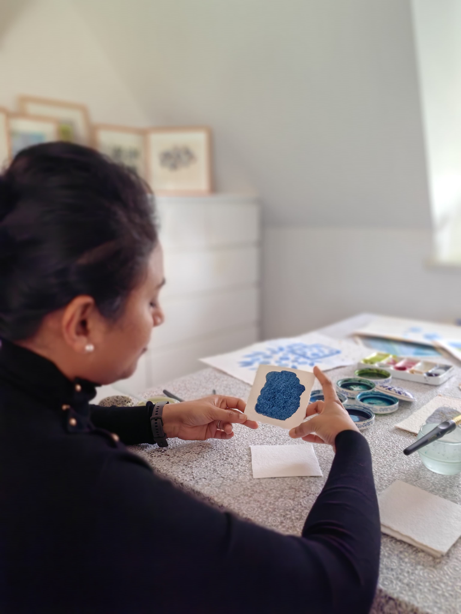

A Brush. A
Blank Sheet.
And Everything Changed.
There are moments in life when the noise becomes too loud. When the world feels too heavy and you search — desperately sometimes — for something that makes sense again. For me, that something was a brush, a sheet of paper and a small, quiet pool of paints.
Art has been my sanity. My softest place to land when life felt hard. My most honest conversation when words were not enough. In those moments when I felt most lost — the canvas always knew what to do with me.
There is something impossible to explain to anyone who has not felt it — the way time simply disappears when you paint. You sit down and the whole world outside quietly stops mattering. Hours pass like minutes. That place — I never want to leave it.
And then there is travel. The moment I step into a new place — a cobbled street in a forgotten town, a coastal path where the sea meets grey stone, a market full of colours I had never thought to put together — something shifts inside me.
Travel does not just inspire my art. It fills it. Every journey I take comes home with me — hidden in a colour choice, whispered in a brushstroke, alive in the texture of a leaf I pressed into my sketchbook somewhere far from home.
The truth is — this dream is not new. I wanted to be an artist long before life asked me to be other things. It was a childhood whisper that never quite went away — through every season, every chapter, every detour, it waited patiently. And finally — I chose to listen.
Today I paint from my place in Frankfurt — chasing the beauty I find in nature, the places I
wander, and the quiet joy of a brush finding its way across a blank sheet of paper.
Every painting carries all of it — the healing, the wandering, the wonder — into your home.
A Few Things I Will
Let
You In On
For anyone who wants to know the person behind the paintings — here are six truths.
I cannot start a painting without coffee. Not tea. Not water. Coffee — strong, warm and sitting exactly within arm's reach of my brush. This is non-negotiable.
Nature walks are basically my art school. I have cancelled plans, missed trains and completely lost track of time because a particular leaf or old architecture caught my eye. No regrets. Never any regrets.
I have been known to paint until the room goes completely dark. Not because I forgot to turn the light on — but because I genuinely did not notice the sun had set. Art does that. And I hope it always will.
Some days the art flows like water. Other days the paper and I simply stare at each other. Both days are part of the process. I have learned — slowly, imperfectly — to be gentle with the quiet days. They are gathering something. They always are.
My art supplies budget is best not discussed. What I will say is that a new sheet of beautiful paper brings me a very specific and very genuine joy that is difficult to explain to anyone who has not held one. You either understand this or you do not.
Happy accidents are my favourite technique. The bleed I did not plan. The wash that went somewhere unexpected. The colour that mixed itself into something I could never have imagined intentionally. Some of my best work was painted by the water deciding for itself.
Here Is What You Can Do Next
Every door leads somewhere beautiful. Choose yours.
Join The Artistry Circle 🌿
Every few weeks I share studio sneak peeks, colour stories, free guides and new collection drops — straight to your inbox. No spam. Just soul.